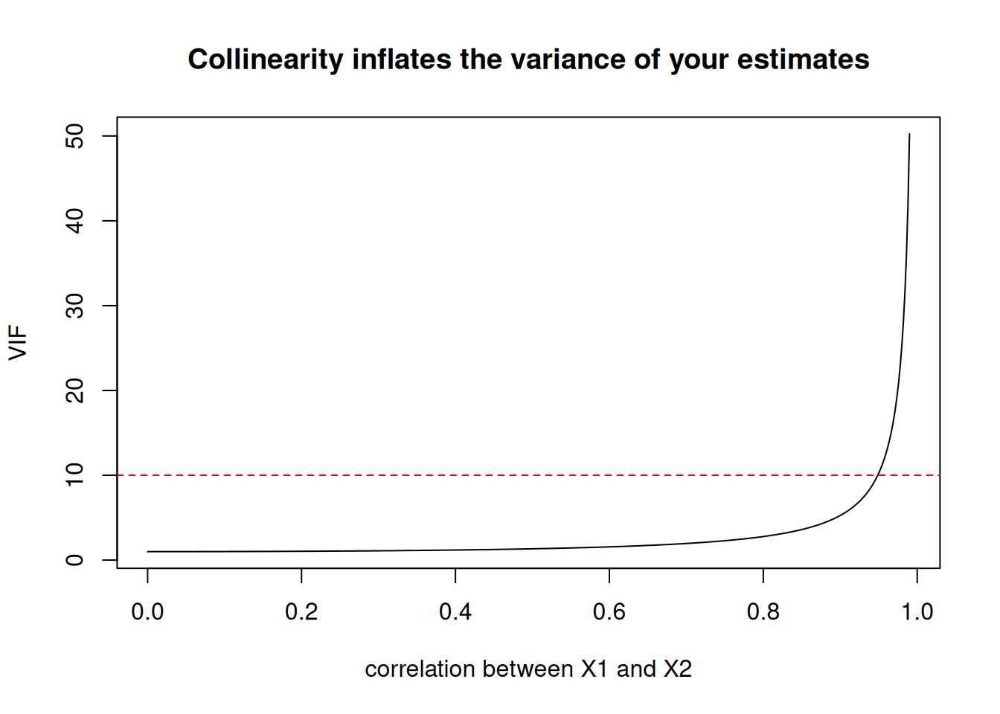

One predictor is rarely enough. The world is multivariate: college GPA depends on high-school GPA and study time and sleep and a dozen other things. Multiple regression (often called MRC, for Multiple Regression/Correlation) is simply the line from the last chapter grown a dimension:
\[y = b_1 x_1 + b_2 x_2 + \cdots + b_k x_k + a\]
The logic does not change one bit. We still minimize the sum of squared residuals, and we still quantify our uncertainty about every coefficient. What does change - and what trips up almost everyone - is what a coefficient now means when the predictors are tangled up with each other. That tangle is the whole story of this chapter.
15.1 Learning Objectives
Understand what a regression coefficient means when other predictors are present (partialling).
Distinguish the semipartial correlation, the partial correlation, and the standardized coefficient.
Interpret \(R\), \(R^2\), and adjusted \(R^2\) as ratios of variance.
Diagnose multicollinearity with the VIF and know your options for dealing with it.
15.2 Some Deliberately Tangled Data
To see the interesting behavior, we need predictors that are correlated with each other. The cleanest way to manufacture that is to build them from a shared source, then add noise - so we know the truth going in.
set.seed(1936) # Fisher's "The Design of Experiments"base <-rnorm(100)y <- base +rnorm(100)x1 <- base +rnorm(100)x2 <- base +rnorm(100)dat <-data.frame(y, x1, x2)# x1 and x2 are correlated because they share 'base'round(cor(dat), 2)
y x1 x2
y 1.00 0.51 0.56
x1 0.51 1.00 0.57
x2 0.56 0.57 1.00
Here is the puzzle that drives the chapter. If you regress y on x1alone, you get one slope. In the joint model above you get a different slope. Why? Because in the joint model, b1 is the effect of x1with x2 held constant - it has been partialled. R did not lie to you in either model; the two slopes answer two different questions.
15.3 Three Things People Confuse
When predictors overlap, there are three distinct quantities, and sloppy language treats them as one. Picture the classic Venn diagram from Cohen, Cohen, West, and Aiken (Aiken 2002): circle \(Y\) overlaps circles \(X_1\) and \(X_2\), and \(X_1\) and \(X_2\) overlap each other. Label the piece of \(Y\) that only\(X_1\) explains as area \(a\), and the piece \(Y\) has left over (unexplained) as area \(e\).
Semipartial correlation\(sr_1\): the unique slice, \(sr_1^2 = a\). “How much of all of Y’s variance does \(x_1\) uniquely explain?”
Partial correlation\(pr_1\): the unique slice relative to what is left to explain, \(pr_1^2 = \frac{a}{a+e}\). “Of the Y variance not already explained by \(x_2\), how much does \(x_1\) explain?”
Standardized regression coefficient\(\beta_1\): the slope R reports when everything is standardized. This is what lm() gives you.
All three are built from the same three correlations, but they are not the same number. Here they are, by formula:
Notice they share the same numerator and differ only in the denominator - which is exactly why they get muddled. Let us confirm that \(\beta_1\) is really the standardized slope R reports:
lm3z <-lm(scale(y) ~scale(x1) +scale(x2), data = dat)round(coef(lm3z)[["scale(x1)"]], 3) # compare to beta1 above
[1] 0.284
Same number. So the coefficient lm() reports is a partial effect - it controls for the other predictors. That is the single most important sentence in multiple regression. When someone says “controlling for X,” this is the machinery they are invoking.
Important\(sr\) vs. \(pr\) vs. \(\beta\) - Say It Out Loud
The semipartial (\(sr\)) is \(x_1\)’s unique contribution measured against all of Y. Square it and you get the increase in \(R^2\) from adding \(x_1\) last. This is usually the one you want to report.
The partial (\(pr\)) measures the same unique contribution but against only the unexplained part of Y, so it is always at least as large in magnitude as the semipartial.
The standardized coefficient (\(\beta\)) is the slope, in standard-deviation units, and is what the model uses to predict.
Three questions, three numbers. Do not let a textbook (or a reviewer) tell you they are interchangeable.
15.4\(R\), \(R^2\), and the “Shrunken” \(R^2\)
Statistics is about variance, and \(R^2\) is the cleanest variance story we have. \(R\) is just the correlation between what we observed and what the model predicts; \(R^2\) is the ratio of predicted-to-total variance:
That is it: \(R^2 = \frac{\text{var}(\hat{y})}{\text{var}(y)}\) - the fraction of Y’s variance the model reproduces. But \(R^2\) is a greedy optimist: add any predictor, even pure noise, and it never goes down. So we penalize it for complexity to get the adjusted (or “shrunken”) \(R^2\):
n <-length(y); k <-2R2_adj <-1- (1- R2) * (n -1) / (n - k -1)round(c(R2_adj = R2_adj, adj_from_summary =summary(lm3)$adj.r.squared), 3)
R2_adj adj_from_summary
0.355 0.355
The adjustment is why you should never judge a model by raw \(R^2\) alone. Throw in enough predictors and you can make \(R^2\) beautiful and the model worthless.
15.5 Testing the Coefficients (Rebuilding the Table Again)
As always, we do not trust the machine until we can reproduce it. The standard error of a coefficient is:
where the variance inflation factor\(\text{VIF}_1 = \frac{1}{1 - R^2_1}\), and \(R^2_1\) comes from regressing \(x_1\) on all the other predictors. Watch:
R2_1 <-summary(lm(x1 ~ x2, data = dat))$r.squared # x1 explained by x2VIF1 <-1/ (1- R2_1)SEb1 <- (sd(y) /sd(x1)) *sqrt(VIF1) *sqrt((1- R2) / (n - k -1))b1 <-coef(lm3)[["x1"]]t1 <- b1 / SEb1p1 <-2*pt(-abs(t1), df = n - k -1) # df = n - k - 1, NOT n - 1round(c(SE = SEb1, t = t1, p = p1), 4)
SE t p
0.0941 2.8941 0.0047
summary(lm3)$coefficients["x1", ] # compare
Estimate Std. Error t value Pr(>|t|)
0.272461785 0.094143554 2.894109837 0.004696413
The by-hand values match R’s table. Two things to burn in:
The degrees of freedom for a coefficient’s \(t\) test are \(n - k - 1\) - we spend one df per predictor and one for the intercept. (An older version of this lecture used \(n - 1\) here; that is wrong, and with several predictors it matters.)
The VIF sits right inside the standard error. When predictors are collinear, VIF climbs, the SE inflates, \(t\) shrinks, and your once-significant predictor goes quiet - even though nothing about the relationship changed. Collinearity does not bias your slopes; it makes them imprecise.
For the whole model, the omnibus test is an \(F\) built from \(R^2\):
\[F = \frac{R^2 / k}{(1 - R^2)/(n - k - 1)} \quad \text{with } df_1 = k,\ df_2 = n - k - 1\]
Fmodel <- (R2 / k) / ((1- R2) / (n - k -1))pF <-pf(Fmodel, df1 = k, df2 = n - k -1, lower.tail =FALSE)round(c(F = Fmodel, p = pF), 5)
F p
28.2781 0.0000
summary(lm3)$fstatistic # compare F and its df
value numdf dendf
28.2781 2.0000 97.0000
15.6 Multicollinearity: Seeing the Damage
Let us watch the VIF do its dirty work directly. As two predictors become more correlated, the VIF explodes:
curve(1/ (1- x^2), from =0, to =0.99, n =500,xlab ="correlation between X1 and X2", ylab ="VIF",main ="Collinearity inflates the variance of your estimates")abline(h =10, col ="red", lty =2) # a common (rough) rule-of-thumb threshold

Past a correlation of about 0.95 the curve rockets skyward. A predictor that is 95% predictable from the others carries almost no unique information, so the model cannot pin down its slope. The red line marks a rough \(\text{VIF} = 10\) rule of thumb - but treat it as a smoke alarm, not a law.
15.7 Six Ways to Deal With Collinearity
There is no single fix; there are trade-offs. In rough order of how often they are the right call:
Delete a redundant predictor. If two variables measure nearly the same thing, you probably do not need both. Cheapest fix, but you lose whatever unique signal was there.
Combine them. Average the standardized predictors into a single composite: rowMeans(scale(cbind(x1, x2))). Often the most defensible move when the predictors are indicators of one underlying construct.
Use a shrinkage method (e.g., ridge regression), which deliberately trades a little bias for a lot of stability.
Reduce to principal components and regress on those - orthogonal by construction, so VIF becomes 1, at the cost of interpretability.
Center the predictors (subtract the mean). This does nothing for correlational collinearity, but it removes the nonessential collinearity created by interaction and polynomial terms - which is why we center before building those.
Impose logical order. Sometimes theory tells you which predictor comes “first,” and you enter them hierarchically rather than pretending they compete on equal footing.
Estimate Std. Error t value Pr(>|t|)
(Intercept) -0.039 0.112 -0.346 0.73
composite 0.956 0.127 7.513 0.00
One predictor, no collinearity, and often a cleaner story than two fighting over the same variance.
15.8 A Real Example: Predicting College GPA
Let’s leave the simulated world and put all of this to work on the real GPA dataset from the last chapter. There we predicted college GPA from high-school GPA alone. Now we add the other things an admissions office actually has: SAT total and the quality of the applicant’s letters of recommendation.
Every coefficient here is a partial effect - the pull of that predictor with the other two held constant. Notice HSGPA’s slope shrank from its bivariate value: some of what looked like “high-school GPA” was really SAT and letter quality traveling alongside it. That is partialling doing its job.
Now check for collinearity by hand, exactly as we defined it - each VIF is \(1/(1-R^2_j)\) where \(R^2_j\) regresses that predictor on the others:
All three VIFs sit near 1 - our predictors carry mostly distinct information, so the model can pin down each slope cleanly. (Recall the HSGPA–QLOR correlation was the highest at 0.63; that is real but nowhere near the danger zone.) This is the whole workflow in miniature: fit, read the partial effects, and check that collinearity has not quietly wrecked your standard errors.
TipDo One Yourself
Simulate three predictors where x3 is nearly a copy of x1 (e.g., x3 <- x1 + rnorm(100, 0, 0.2)), plus an outcome y that truly depends on x1 and x2.
Fit y ~ x1 + x2 + x3 and report the coefficients, their standard errors, and each VIF (compute the VIFs by hand with 1/(1 - R2_j)).
Now drop x3 and refit. What happened to the standard error and \(t\) for x1? Explain why in terms of the VIF sitting inside the SE.
Compute the semipartial correlation for x2 in the full model, and confirm its square equals the drop in \(R^2\) when you remove x2.
If you can explain part 2 to a skeptical colleague, you understand multicollinearity better than the software does.
15.9 Where We Go Next
We have been treating every predictor as continuous. But some of the most important predictors are categorical - treatment vs. control, cat vs. dog, before vs. after. It turns out ANOVA is not a separate technique at all; it is just multiple regression with cleverly coded categorical predictors. That unification - the General Linear Model - is the subject of the next chapter, ANOVA and the GLM.
Aiken, Stephen G. West, Patricia Cohen. 2002. Applied MultipleRegression/CorrelationAnalysis for the BehavioralSciences. 3rd ed. Routledge. https://doi.org/10.4324/9780203774441.